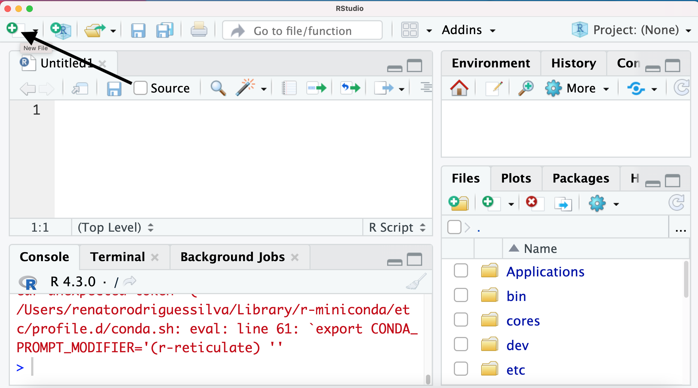
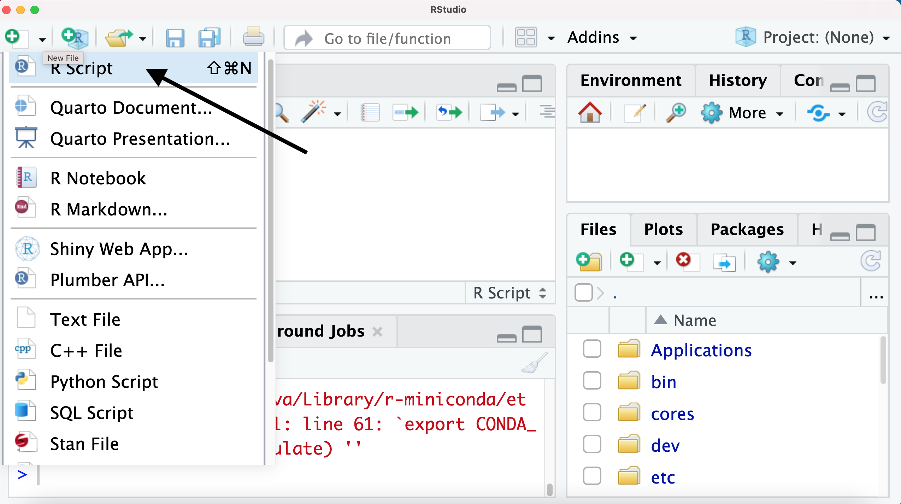

[1] 2[1] 1[1] 6[1] 0.8[1] 8[1] 7O objetivo da segunda aula é ensinar ao aluno:
O layout do RStudio;
Comandos básico do R.
Layout do RStudio;
Como utilizar o R como calculadora
Principais objetos no R



O painel console provê uma área para exceutar o código interativamente.
Por default, o painel console é o software R, mas é possível ter um console python ou até mesmo o terminal.
Nesse curso, abordaremos somente o software R.
O painel “environment” é composto pelas abas: “environment”, “history”, “connections”, “tutorial” e “presentation”.
Nesse curso, abordaremos apenas as abas “environment” e “history”
A aba de ambiente exibe objetos R e Python salvos atualmente.
Ainda oferece:
Exibe os comandos que foram executados na sessão atual junto com a funcionalidade de pesquisa.
Existem botões para carregar/salvar o histórico de comandos em um arquivo,
Além de enviar o comando selecionado para o console ou inseri-lo no documento de trabalho atual.
Há um botão de exclusão para remover o histórico selecionado
Ou há um botão de vassoura para apagar todo o histórico da sessão atual.
Esse painel é composto pelas abas: files, plots, packages, help and viewer.
Aba Files oferece exploração interativa do projeto atual do R junto com todo o diretório.
Aba Plots exibe imagens estáticas geradas pelo código.
Aba Packages permite visualizar os pacotes R atualmente instalados e possui uma barra de pesquisa para buscar na biblioteca atual de pacotes.
Aba Help é usada para exibir a documentação dos pacotes.
Aba Viewer é usada para mostrar o conteúdo de aplicações em Web, como Shiny Apps.
O software R é baseado em linhas de comandos. A seguir vamos mostrar como podemos fazer operações básicas de matemática.
Observe como o R responde em algumas situações
Conjunto de elementos do mesmo tipo (logical, numeric, integer, double character)
[1] 1 2 3 4 5 [1] 1.0 1.1 1.2 1.3 1.4 1.5 1.6 1.7 1.8 1.9 2.0 2.1 2.2 2.3 2.4 2.5 2.6 2.7 2.8
[20] 2.9 3.0 3.1 3.2 3.3 3.4 3.5 3.6 3.7 3.8 3.9 4.0 4.1 4.2 4.3 4.4 4.5 4.6 4.7
[39] 4.8 4.9 5.0 [1] 1.000000 1.444444 1.888889 2.333333 2.777778 3.222222 3.666667 4.111111
[9] 4.555556 5.000000 [1] 1.000000 1.000000 1.444444 1.444444 1.888889 1.888889 2.333333 2.333333
[9] 2.777778 2.777778 3.222222 3.222222 3.666667 3.666667 4.111111 4.111111
[17] 4.555556 4.555556 5.000000 5.000000[1] 1 1 2 3 4
1 5 9 13 Sao Paulo Americana Piracicaba Madson
9 10 11 12 2 1 4
Sao Paulo 5 1 13
Piracicaba 7 3 15
Madson 8 4 16 1 2 4
Sao Paulo 1 5 13
Piracicaba 3 7 15
Madson 4 8 16[1] 10São Similares as matrizes no entanto permite que as colunas tenham diferentes tipos
Sepal.Length Sepal.Width Petal.Length Petal.Width Species
1 5.1 3.5 1.4 0.2 setosa
2 4.9 3.0 1.4 0.2 setosa
3 4.7 3.2 1.3 0.2 setosa
4 4.6 3.1 1.5 0.2 setosa
5 5.0 3.6 1.4 0.2 setosa
6 5.4 3.9 1.7 0.4 setosa
7 4.6 3.4 1.4 0.3 setosa
8 5.0 3.4 1.5 0.2 setosa
9 4.4 2.9 1.4 0.2 setosa
10 4.9 3.1 1.5 0.1 setosa
11 5.4 3.7 1.5 0.2 setosa
12 4.8 3.4 1.6 0.2 setosa
13 4.8 3.0 1.4 0.1 setosa
14 4.3 3.0 1.1 0.1 setosa
15 5.8 4.0 1.2 0.2 setosa
16 5.7 4.4 1.5 0.4 setosa
17 5.4 3.9 1.3 0.4 setosa
18 5.1 3.5 1.4 0.3 setosa
19 5.7 3.8 1.7 0.3 setosa
20 5.1 3.8 1.5 0.3 setosa
21 5.4 3.4 1.7 0.2 setosa
22 5.1 3.7 1.5 0.4 setosa
23 4.6 3.6 1.0 0.2 setosa
24 5.1 3.3 1.7 0.5 setosa
25 4.8 3.4 1.9 0.2 setosa
26 5.0 3.0 1.6 0.2 setosa
27 5.0 3.4 1.6 0.4 setosa
28 5.2 3.5 1.5 0.2 setosa
29 5.2 3.4 1.4 0.2 setosa
30 4.7 3.2 1.6 0.2 setosa
31 4.8 3.1 1.6 0.2 setosa
32 5.4 3.4 1.5 0.4 setosa
33 5.2 4.1 1.5 0.1 setosa
34 5.5 4.2 1.4 0.2 setosa
35 4.9 3.1 1.5 0.2 setosa
36 5.0 3.2 1.2 0.2 setosa
37 5.5 3.5 1.3 0.2 setosa
38 4.9 3.6 1.4 0.1 setosa
39 4.4 3.0 1.3 0.2 setosa
40 5.1 3.4 1.5 0.2 setosa
41 5.0 3.5 1.3 0.3 setosa
42 4.5 2.3 1.3 0.3 setosa
43 4.4 3.2 1.3 0.2 setosa
44 5.0 3.5 1.6 0.6 setosa
45 5.1 3.8 1.9 0.4 setosa
46 4.8 3.0 1.4 0.3 setosa
47 5.1 3.8 1.6 0.2 setosa
48 4.6 3.2 1.4 0.2 setosa
49 5.3 3.7 1.5 0.2 setosa
50 5.0 3.3 1.4 0.2 setosa
51 7.0 3.2 4.7 1.4 versicolor
52 6.4 3.2 4.5 1.5 versicolor
53 6.9 3.1 4.9 1.5 versicolor
54 5.5 2.3 4.0 1.3 versicolor
55 6.5 2.8 4.6 1.5 versicolor
56 5.7 2.8 4.5 1.3 versicolor
57 6.3 3.3 4.7 1.6 versicolor
58 4.9 2.4 3.3 1.0 versicolor
59 6.6 2.9 4.6 1.3 versicolor
60 5.2 2.7 3.9 1.4 versicolor
61 5.0 2.0 3.5 1.0 versicolor
62 5.9 3.0 4.2 1.5 versicolor
63 6.0 2.2 4.0 1.0 versicolor
64 6.1 2.9 4.7 1.4 versicolor
65 5.6 2.9 3.6 1.3 versicolor
66 6.7 3.1 4.4 1.4 versicolor
67 5.6 3.0 4.5 1.5 versicolor
68 5.8 2.7 4.1 1.0 versicolor
69 6.2 2.2 4.5 1.5 versicolor
70 5.6 2.5 3.9 1.1 versicolor
71 5.9 3.2 4.8 1.8 versicolor
72 6.1 2.8 4.0 1.3 versicolor
73 6.3 2.5 4.9 1.5 versicolor
74 6.1 2.8 4.7 1.2 versicolor
75 6.4 2.9 4.3 1.3 versicolor
76 6.6 3.0 4.4 1.4 versicolor
77 6.8 2.8 4.8 1.4 versicolor
78 6.7 3.0 5.0 1.7 versicolor
79 6.0 2.9 4.5 1.5 versicolor
80 5.7 2.6 3.5 1.0 versicolor
81 5.5 2.4 3.8 1.1 versicolor
82 5.5 2.4 3.7 1.0 versicolor
83 5.8 2.7 3.9 1.2 versicolor
84 6.0 2.7 5.1 1.6 versicolor
85 5.4 3.0 4.5 1.5 versicolor
86 6.0 3.4 4.5 1.6 versicolor
87 6.7 3.1 4.7 1.5 versicolor
88 6.3 2.3 4.4 1.3 versicolor
89 5.6 3.0 4.1 1.3 versicolor
90 5.5 2.5 4.0 1.3 versicolor
91 5.5 2.6 4.4 1.2 versicolor
92 6.1 3.0 4.6 1.4 versicolor
93 5.8 2.6 4.0 1.2 versicolor
94 5.0 2.3 3.3 1.0 versicolor
95 5.6 2.7 4.2 1.3 versicolor
96 5.7 3.0 4.2 1.2 versicolor
97 5.7 2.9 4.2 1.3 versicolor
98 6.2 2.9 4.3 1.3 versicolor
99 5.1 2.5 3.0 1.1 versicolor
100 5.7 2.8 4.1 1.3 versicolor
101 6.3 3.3 6.0 2.5 virginica
102 5.8 2.7 5.1 1.9 virginica
103 7.1 3.0 5.9 2.1 virginica
104 6.3 2.9 5.6 1.8 virginica
105 6.5 3.0 5.8 2.2 virginica
106 7.6 3.0 6.6 2.1 virginica
107 4.9 2.5 4.5 1.7 virginica
108 7.3 2.9 6.3 1.8 virginica
109 6.7 2.5 5.8 1.8 virginica
110 7.2 3.6 6.1 2.5 virginica
111 6.5 3.2 5.1 2.0 virginica
112 6.4 2.7 5.3 1.9 virginica
113 6.8 3.0 5.5 2.1 virginica
114 5.7 2.5 5.0 2.0 virginica
115 5.8 2.8 5.1 2.4 virginica
116 6.4 3.2 5.3 2.3 virginica
117 6.5 3.0 5.5 1.8 virginica
118 7.7 3.8 6.7 2.2 virginica
119 7.7 2.6 6.9 2.3 virginica
120 6.0 2.2 5.0 1.5 virginica
121 6.9 3.2 5.7 2.3 virginica
122 5.6 2.8 4.9 2.0 virginica
123 7.7 2.8 6.7 2.0 virginica
124 6.3 2.7 4.9 1.8 virginica
125 6.7 3.3 5.7 2.1 virginica
126 7.2 3.2 6.0 1.8 virginica
127 6.2 2.8 4.8 1.8 virginica
128 6.1 3.0 4.9 1.8 virginica
129 6.4 2.8 5.6 2.1 virginica
130 7.2 3.0 5.8 1.6 virginica
131 7.4 2.8 6.1 1.9 virginica
132 7.9 3.8 6.4 2.0 virginica
133 6.4 2.8 5.6 2.2 virginica
134 6.3 2.8 5.1 1.5 virginica
135 6.1 2.6 5.6 1.4 virginica
136 7.7 3.0 6.1 2.3 virginica
137 6.3 3.4 5.6 2.4 virginica
138 6.4 3.1 5.5 1.8 virginica
139 6.0 3.0 4.8 1.8 virginica
140 6.9 3.1 5.4 2.1 virginica
141 6.7 3.1 5.6 2.4 virginica
142 6.9 3.1 5.1 2.3 virginica
143 5.8 2.7 5.1 1.9 virginica
144 6.8 3.2 5.9 2.3 virginica
145 6.7 3.3 5.7 2.5 virginica
146 6.7 3.0 5.2 2.3 virginica
147 6.3 2.5 5.0 1.9 virginica
148 6.5 3.0 5.2 2.0 virginica
149 6.2 3.4 5.4 2.3 virginica
150 5.9 3.0 5.1 1.8 virginica [1] 5.1 4.9 4.7 4.6 5.0 5.4 4.6 5.0 4.4 4.9 5.4 4.8 4.8 4.3 5.8 5.7 5.4 5.1
[19] 5.7 5.1 5.4 5.1 4.6 5.1 4.8 5.0 5.0 5.2 5.2 4.7 4.8 5.4 5.2 5.5 4.9 5.0
[37] 5.5 4.9 4.4 5.1 5.0 4.5 4.4 5.0 5.1 4.8 5.1 4.6 5.3 5.0 7.0 6.4 6.9 5.5
[55] 6.5 5.7 6.3 4.9 6.6 5.2 5.0 5.9 6.0 6.1 5.6 6.7 5.6 5.8 6.2 5.6 5.9 6.1
[73] 6.3 6.1 6.4 6.6 6.8 6.7 6.0 5.7 5.5 5.5 5.8 6.0 5.4 6.0 6.7 6.3 5.6 5.5
[91] 5.5 6.1 5.8 5.0 5.6 5.7 5.7 6.2 5.1 5.7 6.3 5.8 7.1 6.3 6.5 7.6 4.9 7.3
[109] 6.7 7.2 6.5 6.4 6.8 5.7 5.8 6.4 6.5 7.7 7.7 6.0 6.9 5.6 7.7 6.3 6.7 7.2
[127] 6.2 6.1 6.4 7.2 7.4 7.9 6.4 6.3 6.1 7.7 6.3 6.4 6.0 6.9 6.7 6.9 5.8 6.8
[145] 6.7 6.7 6.3 6.5 6.2 5.9 Sepal.Length Sepal.Width Petal.Length Petal.Width Species Renato
1 5.1 3.5 1.4 0.2 setosa TRUE
2 4.9 3.0 1.4 0.2 setosa TRUE
3 4.7 3.2 1.3 0.2 setosa TRUE
4 4.6 3.1 1.5 0.2 setosa TRUE
5 5.0 3.6 1.4 0.2 setosa TRUE
6 5.4 3.9 1.7 0.4 setosa TRUE
7 4.6 3.4 1.4 0.3 setosa TRUE
8 5.0 3.4 1.5 0.2 setosa TRUE
9 4.4 2.9 1.4 0.2 setosa TRUE
10 4.9 3.1 1.5 0.1 setosa TRUE
11 5.4 3.7 1.5 0.2 setosa TRUE
12 4.8 3.4 1.6 0.2 setosa TRUE
13 4.8 3.0 1.4 0.1 setosa TRUE
14 4.3 3.0 1.1 0.1 setosa TRUE
15 5.8 4.0 1.2 0.2 setosa TRUE
16 5.7 4.4 1.5 0.4 setosa TRUE
17 5.4 3.9 1.3 0.4 setosa TRUE
18 5.1 3.5 1.4 0.3 setosa TRUE
19 5.7 3.8 1.7 0.3 setosa TRUE
20 5.1 3.8 1.5 0.3 setosa TRUE
21 5.4 3.4 1.7 0.2 setosa TRUE
22 5.1 3.7 1.5 0.4 setosa TRUE
23 4.6 3.6 1.0 0.2 setosa TRUE
24 5.1 3.3 1.7 0.5 setosa TRUE
25 4.8 3.4 1.9 0.2 setosa TRUE
26 5.0 3.0 1.6 0.2 setosa TRUE
27 5.0 3.4 1.6 0.4 setosa TRUE
28 5.2 3.5 1.5 0.2 setosa TRUE
29 5.2 3.4 1.4 0.2 setosa TRUE
30 4.7 3.2 1.6 0.2 setosa TRUE
31 4.8 3.1 1.6 0.2 setosa TRUE
32 5.4 3.4 1.5 0.4 setosa TRUE
33 5.2 4.1 1.5 0.1 setosa TRUE
34 5.5 4.2 1.4 0.2 setosa TRUE
35 4.9 3.1 1.5 0.2 setosa TRUE
36 5.0 3.2 1.2 0.2 setosa TRUE
37 5.5 3.5 1.3 0.2 setosa TRUE
38 4.9 3.6 1.4 0.1 setosa TRUE
39 4.4 3.0 1.3 0.2 setosa TRUE
40 5.1 3.4 1.5 0.2 setosa TRUE
41 5.0 3.5 1.3 0.3 setosa TRUE
42 4.5 2.3 1.3 0.3 setosa TRUE
43 4.4 3.2 1.3 0.2 setosa TRUE
44 5.0 3.5 1.6 0.6 setosa TRUE
45 5.1 3.8 1.9 0.4 setosa TRUE
46 4.8 3.0 1.4 0.3 setosa TRUE
47 5.1 3.8 1.6 0.2 setosa TRUE
48 4.6 3.2 1.4 0.2 setosa TRUE
49 5.3 3.7 1.5 0.2 setosa TRUE
50 5.0 3.3 1.4 0.2 setosa TRUE
51 7.0 3.2 4.7 1.4 versicolor TRUE
52 6.4 3.2 4.5 1.5 versicolor TRUE
53 6.9 3.1 4.9 1.5 versicolor TRUE
54 5.5 2.3 4.0 1.3 versicolor TRUE
55 6.5 2.8 4.6 1.5 versicolor TRUE
56 5.7 2.8 4.5 1.3 versicolor TRUE
57 6.3 3.3 4.7 1.6 versicolor TRUE
58 4.9 2.4 3.3 1.0 versicolor TRUE
59 6.6 2.9 4.6 1.3 versicolor TRUE
60 5.2 2.7 3.9 1.4 versicolor TRUE
61 5.0 2.0 3.5 1.0 versicolor TRUE
62 5.9 3.0 4.2 1.5 versicolor TRUE
63 6.0 2.2 4.0 1.0 versicolor TRUE
64 6.1 2.9 4.7 1.4 versicolor TRUE
65 5.6 2.9 3.6 1.3 versicolor TRUE
66 6.7 3.1 4.4 1.4 versicolor TRUE
67 5.6 3.0 4.5 1.5 versicolor TRUE
68 5.8 2.7 4.1 1.0 versicolor TRUE
69 6.2 2.2 4.5 1.5 versicolor TRUE
70 5.6 2.5 3.9 1.1 versicolor TRUE
71 5.9 3.2 4.8 1.8 versicolor TRUE
72 6.1 2.8 4.0 1.3 versicolor TRUE
73 6.3 2.5 4.9 1.5 versicolor TRUE
74 6.1 2.8 4.7 1.2 versicolor TRUE
75 6.4 2.9 4.3 1.3 versicolor TRUE
76 6.6 3.0 4.4 1.4 versicolor TRUE
77 6.8 2.8 4.8 1.4 versicolor TRUE
78 6.7 3.0 5.0 1.7 versicolor TRUE
79 6.0 2.9 4.5 1.5 versicolor TRUE
80 5.7 2.6 3.5 1.0 versicolor TRUE
81 5.5 2.4 3.8 1.1 versicolor TRUE
82 5.5 2.4 3.7 1.0 versicolor TRUE
83 5.8 2.7 3.9 1.2 versicolor TRUE
84 6.0 2.7 5.1 1.6 versicolor TRUE
85 5.4 3.0 4.5 1.5 versicolor TRUE
86 6.0 3.4 4.5 1.6 versicolor TRUE
87 6.7 3.1 4.7 1.5 versicolor TRUE
88 6.3 2.3 4.4 1.3 versicolor TRUE
89 5.6 3.0 4.1 1.3 versicolor TRUE
90 5.5 2.5 4.0 1.3 versicolor TRUE
91 5.5 2.6 4.4 1.2 versicolor TRUE
92 6.1 3.0 4.6 1.4 versicolor TRUE
93 5.8 2.6 4.0 1.2 versicolor TRUE
94 5.0 2.3 3.3 1.0 versicolor TRUE
95 5.6 2.7 4.2 1.3 versicolor TRUE
96 5.7 3.0 4.2 1.2 versicolor TRUE
97 5.7 2.9 4.2 1.3 versicolor TRUE
98 6.2 2.9 4.3 1.3 versicolor TRUE
99 5.1 2.5 3.0 1.1 versicolor TRUE
100 5.7 2.8 4.1 1.3 versicolor TRUE
101 6.3 3.3 6.0 2.5 virginica TRUE
102 5.8 2.7 5.1 1.9 virginica TRUE
103 7.1 3.0 5.9 2.1 virginica TRUE
104 6.3 2.9 5.6 1.8 virginica TRUE
105 6.5 3.0 5.8 2.2 virginica TRUE
106 7.6 3.0 6.6 2.1 virginica TRUE
107 4.9 2.5 4.5 1.7 virginica TRUE
108 7.3 2.9 6.3 1.8 virginica TRUE
109 6.7 2.5 5.8 1.8 virginica TRUE
110 7.2 3.6 6.1 2.5 virginica TRUE
111 6.5 3.2 5.1 2.0 virginica TRUE
112 6.4 2.7 5.3 1.9 virginica TRUE
113 6.8 3.0 5.5 2.1 virginica TRUE
114 5.7 2.5 5.0 2.0 virginica TRUE
115 5.8 2.8 5.1 2.4 virginica TRUE
116 6.4 3.2 5.3 2.3 virginica TRUE
117 6.5 3.0 5.5 1.8 virginica TRUE
118 7.7 3.8 6.7 2.2 virginica TRUE
119 7.7 2.6 6.9 2.3 virginica TRUE
120 6.0 2.2 5.0 1.5 virginica TRUE
121 6.9 3.2 5.7 2.3 virginica TRUE
122 5.6 2.8 4.9 2.0 virginica TRUE
123 7.7 2.8 6.7 2.0 virginica TRUE
124 6.3 2.7 4.9 1.8 virginica TRUE
125 6.7 3.3 5.7 2.1 virginica TRUE
126 7.2 3.2 6.0 1.8 virginica TRUE
127 6.2 2.8 4.8 1.8 virginica TRUE
128 6.1 3.0 4.9 1.8 virginica TRUE
129 6.4 2.8 5.6 2.1 virginica TRUE
130 7.2 3.0 5.8 1.6 virginica TRUE
131 7.4 2.8 6.1 1.9 virginica TRUE
132 7.9 3.8 6.4 2.0 virginica TRUE
133 6.4 2.8 5.6 2.2 virginica TRUE
134 6.3 2.8 5.1 1.5 virginica TRUE
135 6.1 2.6 5.6 1.4 virginica TRUE
136 7.7 3.0 6.1 2.3 virginica TRUE
137 6.3 3.4 5.6 2.4 virginica TRUE
138 6.4 3.1 5.5 1.8 virginica TRUE
139 6.0 3.0 4.8 1.8 virginica TRUE
140 6.9 3.1 5.4 2.1 virginica TRUE
141 6.7 3.1 5.6 2.4 virginica TRUE
142 6.9 3.1 5.1 2.3 virginica TRUE
143 5.8 2.7 5.1 1.9 virginica TRUE
144 6.8 3.2 5.9 2.3 virginica TRUE
145 6.7 3.3 5.7 2.5 virginica TRUE
146 6.7 3.0 5.2 2.3 virginica TRUE
147 6.3 2.5 5.0 1.9 virginica TRUE
148 6.5 3.0 5.2 2.0 virginica TRUE
149 6.2 3.4 5.4 2.3 virginica TRUE
150 5.9 3.0 5.1 1.8 virginica TRUEGeneralização dos vetores no sentido que uma lista é uma coleção de objetos
$x
[1] 1 2 3 4
$y
[,1] [,2]
[1,] 1 3
[2,] 2 4
$v
$v$A
[1] 4
$v$B
[1] 5
$s
[1] 1 2 3 4 5
$r
[1] 2